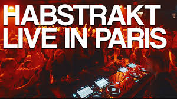

La nuit revient
C'était le 21 mars, au Trabendo. Une salle pleine, une nuit qui a tenu jusqu'à presque 6h du matin, et Habstrakt en headliner d'un format qu'il a construit à sa mesure : le Lineage Tour, cette tournée où il embarque les artistes de sa scène plutôt que de jouer seul. On en avait écrit un live report juste après.
À lire
Habstrakt Lineage Tour au Trabendo — jusqu'à 6h du matin, et une nuit qui méritait mieux que le réveil.
Lire le live report →Cinq jours en arrière, Habstrakt a posté sur sa chaîne YouTube l'enregistrement complet de son set. 42 minutes de bass music parisienne captées dans l'une des salles les plus intimes de la capitale.
HABSTRAKT | Lineage Tour · Le Trabendo, Paris · 21.03.2026
Ce que le live capture
Revoir ce set avec deux mois de recul, c'est l'entendre différemment. La progression est limpide : Habstrakt ne joue pas pour impressionner, il joue pour emmener. Cette basse dense, cette façon d'empiler les couches sans jamais saturer l'espace, sur écran c'est aussi efficace qu'en salle. "Chicken Soup" avec Skrillex reste le moment le plus fort du set, et la captation lui rend justice.
La qualité de la vidéo est bonne. Le son, la lumière, le dancefloor qui répond. C'est le genre de live qui donne envie d'y avoir été, et qui fait regretter d'avoir été au fond si on y était.
Asdek aussi
Dans la foulée, Asdek a lui aussi mis en ligne son set de la soirée. Même salle, même nuit, autre perspective. Sa sélection chirurgicale et "Stay With Me" avec NOSTALGIX, dont on parlait dans le live report, sont là, image par image.
ASDEK | Lineage Tour · Le Trabendo, Paris · 21.03.2026
Deux vidéos, une même nuit. De quoi comprendre pourquoi la scène bass française mérite qu'on s'y attarde.